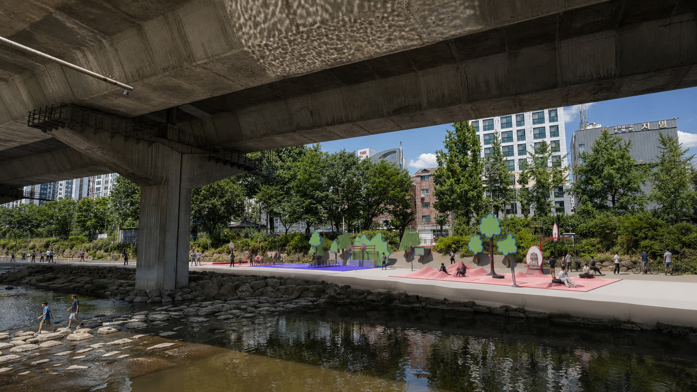
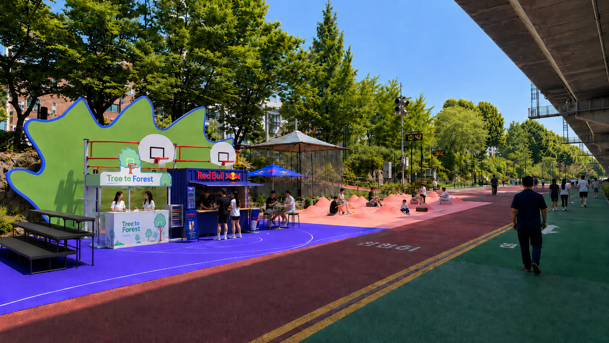
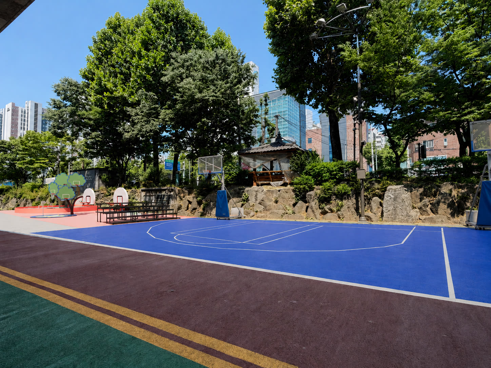
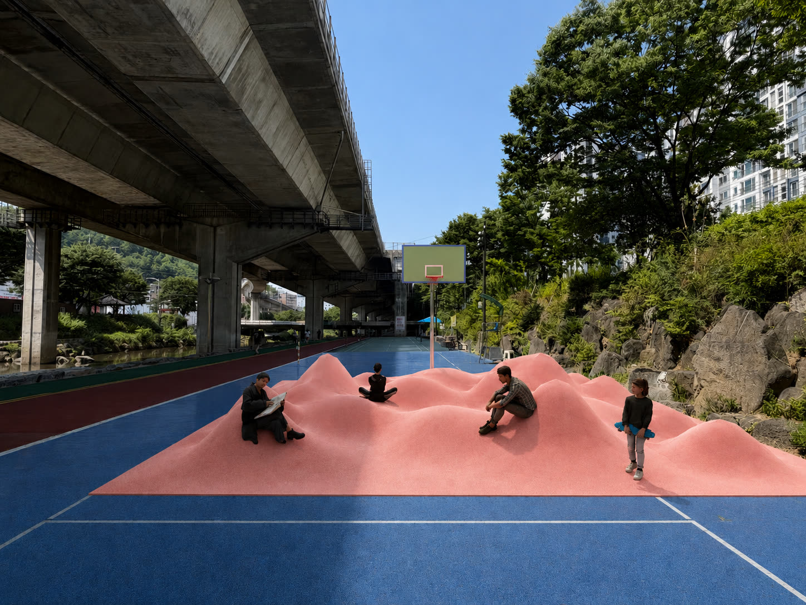
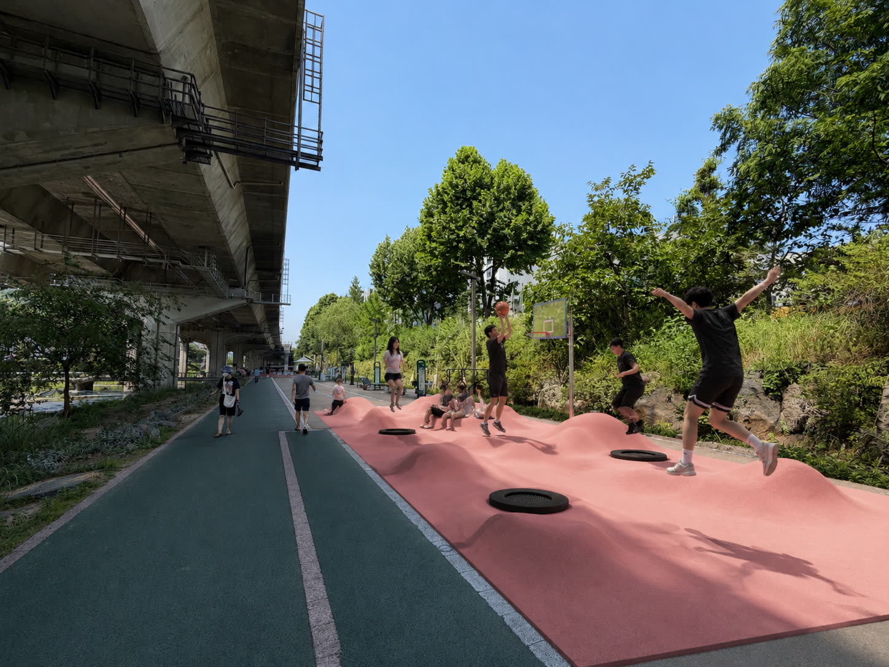
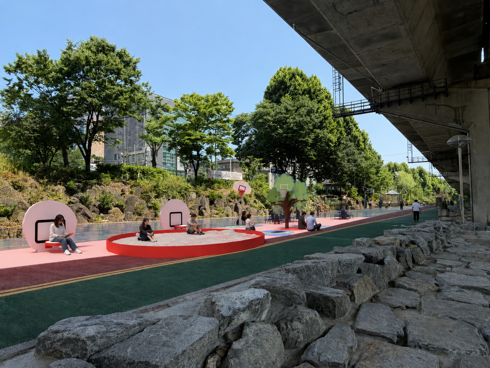
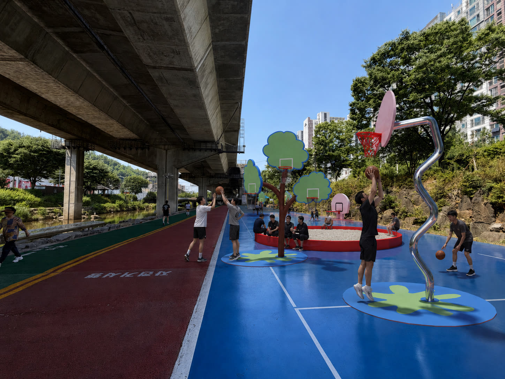

일상 동선 위에 비일상을 박는다. 홍제천을 따라 흩어진 여섯 개의 농구 노드로, 청년 1인가구를 위한 소비 없이 머물 수 있는 도시의 숲을 제안한다.

골대가 유일한 정점이 아닐 때, 지나가는 누구나 머문다.
일반 농구 공간에서 경기·관중·시선은 단 하나의 골대로 수렴한다. 그 위계를 풀어 형태·재질·스케일이 다른 여러 그루로 흩뿌린다. 나무에서 숲으로.
144m 단면에 하천을 따라 숲처럼 분산된다. ★는 농구 강도가 아니라 '하기 → 머물기' 스펙트럼이다.






토너먼트 · HORSE — 실제로 뛰는 소수의 적극 참여자. 길거리 농구의 진짜 장면.
트램펄린 · 3D 코트 — 진지한 농구가 불가능한 환경 = 의도된 진입장벽 제거.
독서 · 휴식 — 농구장 안에서 그냥 머문다. 구경·휴식·독서.
진입장벽을 낮출수록 머무름은 커진다 — 구경꾼 → 관중 → 참여자로 자연스럽게 이동. 진지한 농구인을 포함하는 공간이지만, 진지한 플레이어만을 위한 공간은 아니다.